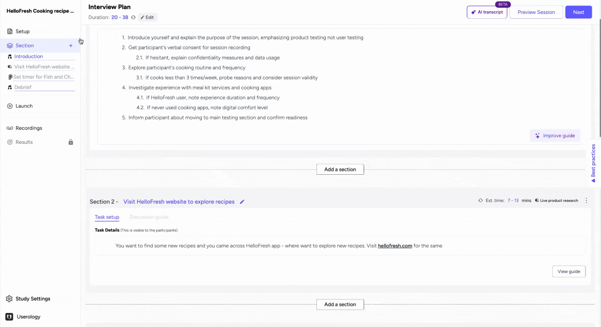
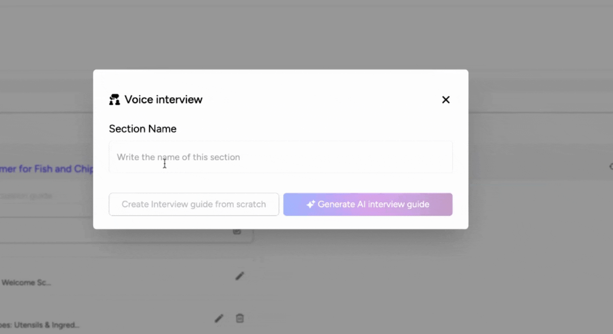
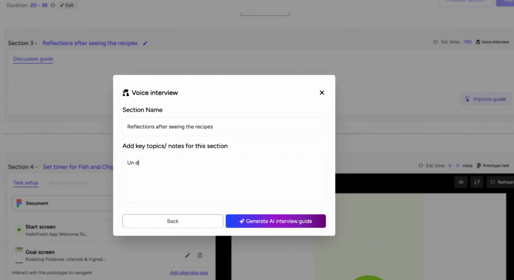
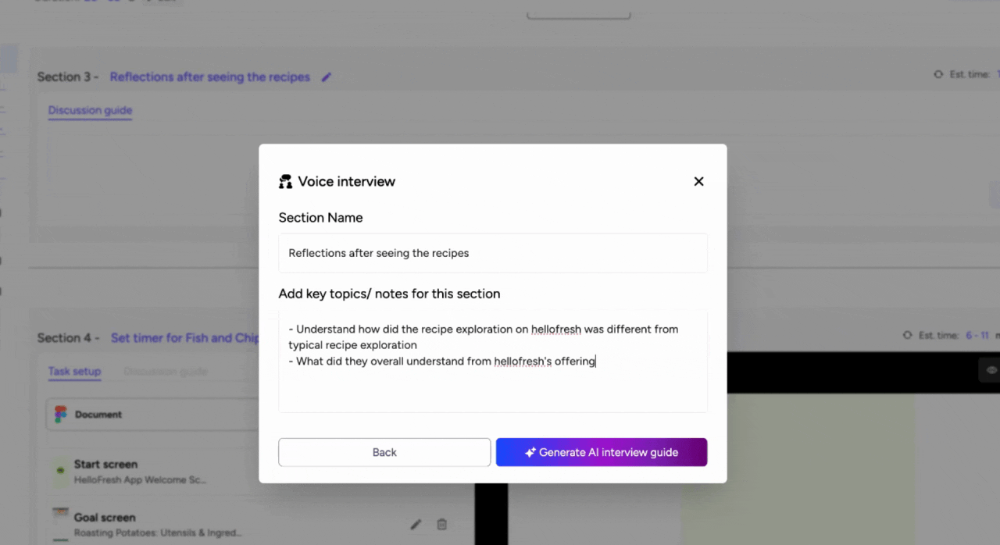
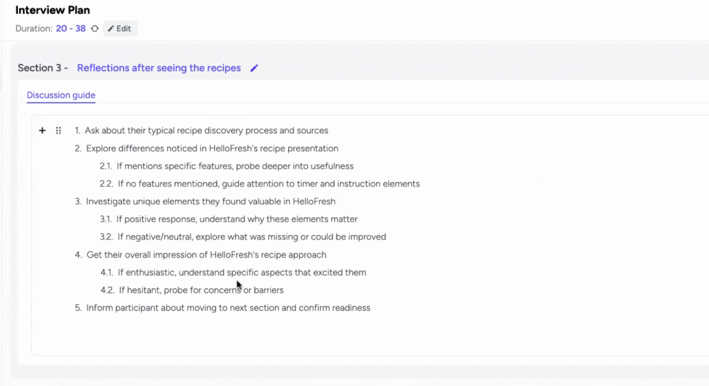

The voice interview section is crucial for conducting in-depth discussions without visual materials, tasks, or directing users to specific websites or applications. This guide will walk you through the process of creating a voice interview section, from naming the section to generating an interview guide using AI.
Key Steps Overview
To set up a Voice interview section in Userology, follow these key steps:
-
Add a Voice Interview Section.
-
Define the Section Name.
-
Mention key topics to cover in the section.
-
Generate an AI Discussion Guide.
-
Modify the Discussion Guide.
Detailed Step-by-Step Guide
Step 1: Add a Voice Interview Section
-
Click on 'Add a Section' or use the plus icon on the left navigation bar to create a new section.
-
You can insert this section between any two existing sections.
What to consider: Decide where this section fits best within your study to maintain a logical flow.
Note: By default, the 'Intro' and 'Debrief' sections are included when setting up a study. However, you can create additional voice interview sections as needed.

Step 2: Define the Section Name
-
Click on the section you just added to open its settings.
-
Enter a name for the section that reflects the topic or purpose of the interview.
What to consider: Ensure the name is clear and descriptive to help you and your team easily identify the section later.

Step 3: Mention Key Topics to Cover in the Section
-
In the section settings, locate the field for key topics or notes.
-
Enter the main topics or questions you want to address during the interview.
Tip: Be specific and concise when listing topics to ensure the AI generates a relevant and focused guide.

Step 4: Generate an AI Discussion Guide
-
After entering the key topics, click on the 'Generate AI Interview Guide' button.
-
Wait for the AI to process the information and create a draft guide.
Note: The AI-generated guide saves time and ensures your interview is aligned with the study objectives. Provide enough context for the AI to generate a more accurate guide. This will reduce the need for extensive modifications.

Step 5: Modify the Discussion Guide
-
Review the AI-generated guide to ensure it meets your requirements.
-
Edit the guide by adding, removing, or rephrasing questions as needed.

If you have any questions or need further assistance, feel free to reach out to us at support@userology.co Happy researching!